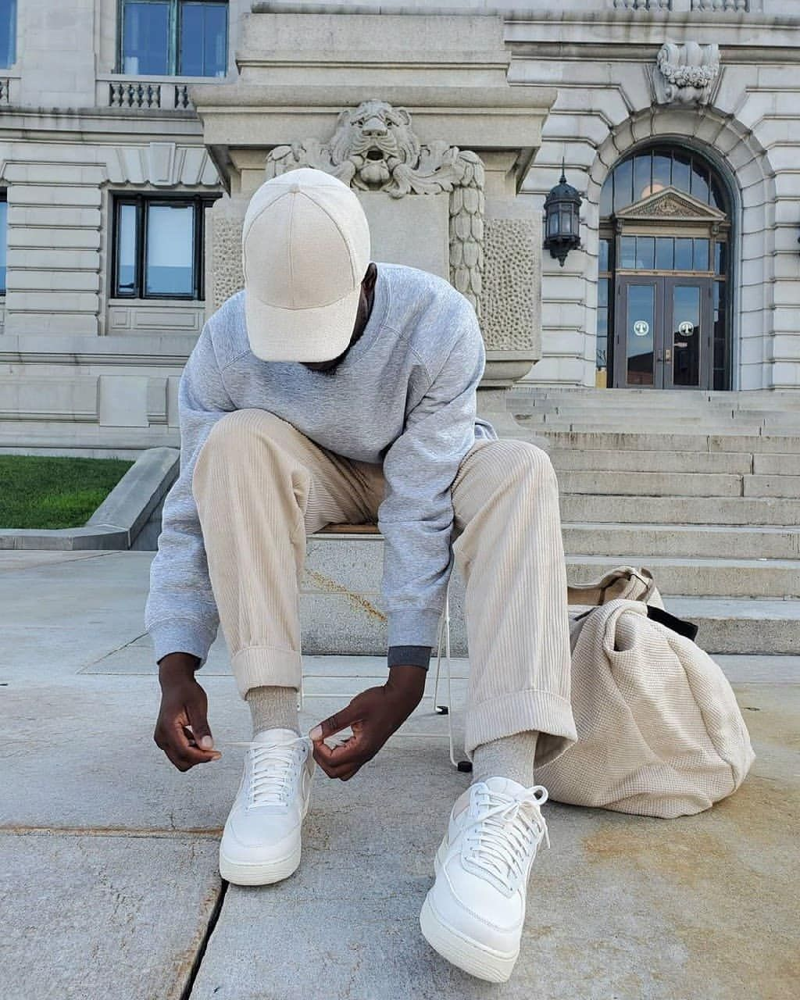

The Walk
The walk from Monterosso to Riomaggiore will take you approximately two hours, give or take an hour depending on the weather conditions and your physical shape.

Aesthetic dress was made of wool or Liberty silk or velvet fabrics. Aesthetic fashions were cut looser and was unstructured in the style of medieval or Renaissance garments with larger sleeves. The dress appeared loose compared with figure hugging fashion garments of the era.
The Aesthetic Movement was no longer a revolutionary concept but inspired fashion designers of the late 19th and early 20th centuries including Martiano Fortuny, Paul Poiret, and led to Art Nuveau and the Arts and Crafts Movement
Charles Frederick Worth An Englishman living in Paris, Charles Frederick Worth (1825 - 1905) is regarded as the first designer in the modern sense of the term, with a large business employing many largely anonymous tailors and seamstresses. A former draper, Worth's success was such that he was able to dictate what customers should wear.
It is a type of fashion that people would describe as as pleasing to look at. However, I would say that aesthetic fashion is clothing that is unique with bold clothes that typically would have been trendy years ago.
That being a brief take on Anaesthetic fashion , the trend has continually over time changed , below is a summary of aesthetic change over time
The aesthetics of youth angst as imagined by Urban Outfitters (image Urban Outfitters). Urban Outfitters has a reputation for appealing to hipster chic, catering to the consumer who is indifferent to being labeled a hipster
The aesthetic wear is mainly an art based outlook this visuallising on the express oneself aspect with the wear,aesthetic is in additionally categorized as below:
Among the many categories of aesthetic wear my interest is on the minimalist aesthetic and a brief info of the same is given below
Minimalist aesthetic captures the “less is more” approach to a minimalist lifestyle in a style of decor. While it typically refers to home decor, it can be applied to any visual space. ... Usually, it involves neutral colors, clean spaces, and minimal distractions.
To live an aesthetic life is to go about life often focused on beauty. ... It's creating it in our surrounding and noticing it in our everyday life. It's being mindful of it, and really appreciating and celebrating it. It might sound rather hedonistic.
When you call a person a minimalist, you're describing their interest in keeping things very simple. A minimalist prefers the minimal amount or degree of something. ... But anyone who likes things very simple could be called a minimalist.



To get a link on more information about anaesthetic wear visit link below
linkThe walk from Monterosso to Riomaggiore will take you approximately two hours, give or take an hour depending on the weather conditions and your physical shape.
Cinque Terre comprises five villages: Monterosso, Vernazza, Corniglia, Manarola, and Riomaggiore.
On the northwest cost of the Italian Riviera, north of the city La Spezia.
The Walk is free!